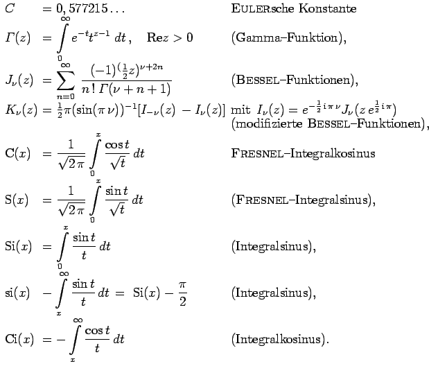

Inhalt Index DeskTop Bronstein
Tabellen
In den Tabellen vorkommende Symbole sind wie folgt definiert:  In der Tabelle vorkommende Abkürzungen für Funktionen entsprechen den in den Kapiteln eingeführten Definitionen.